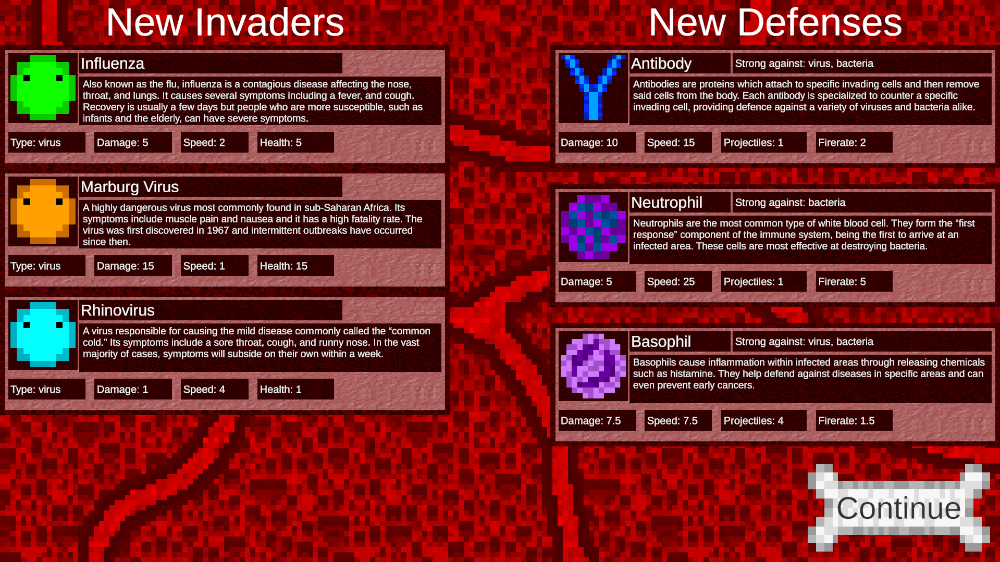

Immune Defender
GitHub RepositoryFun Fact
The music playing system was the most reworked aspect of the entire game, going through three distinct iterations over the course of development.
Overview
Immune Defender was developed as a submission to the Technology Student Association (TSA) Video Game Design competition, winning first place in the East Tennessee Regional TSA Competition and placing as a semifinalist at the 2026 Tennessee TSA State Conference. The core game was developed in under two months by a team of three students, including me. To incorporate the 2026 theme of "retro revival," the game was designed as a modern spin on the classic arcade game "Space Invaders." However, the core theme of the game was based around the immune system, which both met the TSA requirement for the game carry educational value and upheld the "invader" spirit of the original "Space Invaders."


The development of Immune Defender was rather fast due to the game only being properly designed roughly a month and a half prior to the deadline for the regional TSA submission. Nonetheless, every asset was created by hand by the three person team. The game itself was complete by the regional submission deadline, but revisions continued to be made to the music system all the way until the submission deadline for the TSA state conference. Personally, I acted as both the team's leader and programmer, while also assisting with the creation of specialized assets such as art for the user interface. Overall, we were very satisfied with the final result and took great pride in our work.
Fun Fact
Each enemy has its own miniature navigation algorithm rather than following a predefined path, causing enemy movements to be very different every time a level is played.